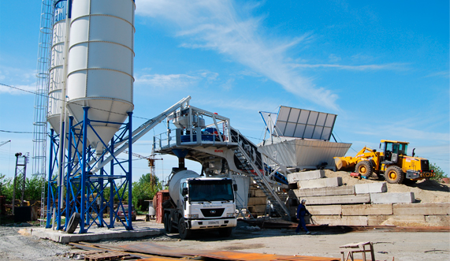
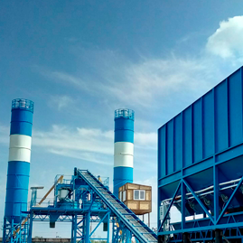
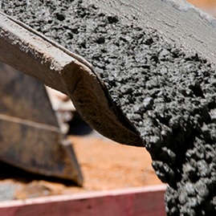
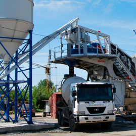

<!DOCTYPE html>
<html lang="ru">
	<head>
		<title>Контент</title>
		<meta charset="utf-8"/>
		<meta content="Контентная страница" name="description"/>
		<meta name="viewport" content="width=device-width, initial-scale=1.0"/>
		<meta name="HandheldFriendly" content="true"/>
		<meta name="format-detection" content="telephone=no"/>
		<meta content="IE=edge" http-equiv="X-UA-Compatible"/>
		<link rel="preload" as="font" type="font/woff2" crossorigin="anonymous" href="styles/fonts/roboto400.woff2"/>
		<link rel="preload" as="font" type="font/woff2" crossorigin="anonymous" href="styles/fonts/roboto300.woff2"/>
		<link rel="preload" as="font" type="font/woff2" crossorigin="anonymous" href="styles/fonts/roboto900.woff2"/>
		<link rel="preload" as="font" type="font/woff2" crossorigin="anonymous" href="styles/fonts/roboto500.woff2"/>
		<link rel="preload" as="font" type="font/woff2" crossorigin="anonymous" href="styles/fonts/roboto100.woff2"/>
		<link rel="preload" as="image" crossorigin="anonymous" href="img/sprite.png"/>
		<link href="img/favicons/favicon.ico" rel="shortcut icon"/>
		<link rel="apple-touch-icon" sizes="180x180" href="img/favicons/apple-touch-icon.png"/>
		<link rel="icon" type="image/png" sizes="32x32" href="img/favicons/favicon-32x32.png"/>
		<link rel="icon" type="image/png" sizes="16x16" href="img/favicons/favicon-16x16.png"/>
		<link rel="manifest" href="img/favicons/manifest.json"/>
		<link rel="mask-icon" href="img/favicons/safari-pinned-tab.svg" color="#5bbad5"/>
		<meta name="theme-color" content="#ffffff"/>
		<link href="js/owl.carousel/owl.carousel.min.css" rel="stylesheet"/>
		<link href="js/owl.carousel/owl.theme.default.min.css" rel="stylesheet"/>
		<link rel="stylesheet" href="styles/styles.css" as="style"/>
	</head>
</html>
<header>
	<div class="header__container"><a class="header__logo" href="#"></a>
		<div class="header__content">
			<div class="header-callback">
				<div class="header-callback__tel"><a class="number" href="tel:89201234567">+7 920 <span>123 45 67</span></a>
				</div>
				<form class="header-callback__form">           
					<input type="checkbox" id="showCallForm"/>
					<label class="button" for="showCallForm">
						<div class="container">            
							<div class="title">Заказать звонок</div>
							<label>Ваш номер:</label>
							<input type="tel" placeholder="+7 (___) ___-__-__" name="tel" required="required"/>
							<input type="submit" value=""/>
						</div>
					</label>
				</form>
			</div>
			<div class="header-search"><a class="header-search__help" href="#">помощь заказчику</a>
				<form class="header-search__form" action="/search" method="get">
					<input type="checkbox" id="showSearchForm"/>
					<label for="showSearchForm"></label>
					<input type="search" placeholder="Поиск" autocomplete="off"/><span id="fast-search-loader">Загрузка результатов...   </span>
					<input type="submit"/>
					<div class="ornamental-line">                 </div>
				</form>
			</div>
			<div class="header-menu">
				<input type="checkbox" id="showMainMenu"/>
				<label for="showMainMenu"> ☰</label>
				<nav>
					<ul class="root_menu">
						<li>               
							<input type="checkbox" id="showSubMenu1"/>
							<label for="showSubMenu1"></label><a href="#">наша компания</a>
							<ul class="submenu">
								<li><a href="#">Наше производство</a></li>
								<li><a href="#">Наша лаборатория</a></li>
								<li><a href="#">Наши объекты</a></li>
							</ul>
						</li>
						<li><a href="#">прайт-лист</a></li>
						<li><a href="#">продукция</a></li>
						<li>               
							<input type="checkbox" id="showSubMenu2"/>
							<label for="showSubMenu2"></label><a href="#">виды оплаты</a>
							<ul class="submenu">
								<li><a href="#">PayPal</a></li>
								<li><a href="#">WebMany</a></li>
								<li><a href="#">Endex </a></li>
							</ul>
						</li>
						<li><a href="#">контакты</a></li>
						<li><a href="#">акции</a></li>
						<li><a href="#">нерудные материалы</a></li>
					</ul>
				</nav>
			</div>
		</div>
	</div>
</header>
<body class="content-page">
	<h1>Заголовок первого уровня</h1>
	<p>Производственная компания "Нагорный Бетонный Завод" занимается <a href="#">производством бетона</a>, бетонных растворов и цементно-песчаный смесей высочайшего качества. <br>Так же мы осуществляем <a href="#">доставку бетона по Нижнему Новгороду и области</a> в кратчайшие сроки. </p>
	<p class="mobile-hide desktop-on">Бетон – это композиционный материал, состоящий из четырех основных элементов: воды, цемента, мелких и крупных заполнителей. В настоящее время он является материалом №1 в строительстве, занимая главенствующую позицию. Это происходит благодаря универсальности бетона, его прочности, а так же простоте использования.</p>
	<h2>Заголовок второго уровня</h2>
	<p>Производственная компания "Нагорный Бетонный Завод" занимается <a href="#">производством бетона</a>, бетонных растворов и цементно-песчаный смесей высочайшего качества. <br>Так же мы осуществляем доставку бетона по Нижнему Новгороду и области в кратчайшие сроки. </p>
	<p class="mobile-hide desktop-on">Бетон – это композиционный материал, состоящий из четырех основных элементов: воды, цемента, мелких и крупных заполнителей. В настоящее время он является материалом №1 в строительстве, занимая главенствующую позицию. Это происходит благодаря универсальности бетона, его прочности, а так же простоте использования.</p>
	<h3>Заголовок третьего уровня</h3>
	<p>Производственная компания "Нагорный Бетонный Завод" занимается <a href="#">производством бетона</a>, бетонных растворов и цементно-песчаный смесей высочайшего качества. <br>Так же мы осуществляем доставку бетона по Нижнему Новгороду и области в кратчайшие сроки. </p>
	<p class="mobile-hide desktop-on">Бетон – это композиционный материал, состоящий из четырех основных элементов: воды, цемента, мелких и крупных заполнителей. В настоящее время он является материалом №1 в строительстве, занимая главенствующую позицию. Это происходит благодаря универсальности бетона, его прочности, а так же простоте использования. </p>
	<h4>Заголовок четвёртого уровня</h4>
	<p>Производственная компания "Нагорный Бетонный Завод" занимается <a href="#">производством бетона</a>, бетонных растворов и цементно-песчаный смесей высочайшего качества.  <br>Так же мы осуществляем доставку бетона по Нижнему Новгороду и области в кратчайшие сроки. </p>
	<h5>Заголовок пятого уровня</h5>
	<p>Производственная компания "Нагорный Бетонный Завод" занимается <a href="#">производством бетона</a>, бетонных растворов и цементно-песчаный смесей высочайшего качества.  <br>Так же мы осуществляем доставку бетона по Нижнему Новгороду и области в кратчайшие сроки. </p>
	<h6>Заголовок шестого уровня</h6>
	<p>Производственная компания "Нагорный Бетонный Завод" занимается <a href="#">производством бетона</a>, бетонных растворов и цементно-песчаный смесей высочайшего качества. <br>Так же мы осуществляем доставку бетона по Нижнему Новгороду и области в кратчайшие сроки.  </p>
	<text-with-img>
		<div class="text-with-img__title">Текст, сопровождаемый изображениями</div>
		<div class="text-with-img-content">
			<div class="text-with-img-content__right-img">
				<div class="text-with-img-content__img"></div>
				<div class="text-with-img-content__text">
					<p>Производственная компания "Нагорный Бетонный Завод" занимается <a href="#">производством бетона</a>, бетонных растворов и цементно-песчаный смесей высочайшего качества. Так же мы осуществляем <a href="#">доставку бетона по Нижнему Новгороду и области</a> в кратчайшие сроки.</p>
					<p>Бетон – это композиционный материал, состоящий из четырех основных элементов: воды, цемента, мелких и крупных заполнителей. В настоящее время он является материалом №1 в строительстве, занимая главенствующую позицию. Это происходит благодаря универсальности бетона, его прочности, а так же простоте использования.</p>
					<p>Производственная компания "Нагорный Бетонный Завод" занимается <a href="#">производством бетона</a>, бетонных растворов и цементно-песчаный смесей высочайшего качества. Так же мы осуществляем <a href="#">доставку бетона по Нижнему Новгороду и области</a> в кратчайшие сроки.</p>
				</div>
			</div>
			<div class="text-with-img-content__left-img">
				<div class="text-with-img-content__img"></div>
				<div class="text-with-img-content__text">
					<p><a href="#">Марка бетона</a> показывает предел его прочности при сжатии и обозначается латинской буквой "М" и цифрами от 50 до 100, которые обозначают этот самый предел на сжатие в кг/см2. В зависимости от марки определяется и область использования бетона.</p>
					<p>Бетон – это композиционный материал, состоящий из четырех основных элементов: воды, цемента, мелких и крупных заполнителей. В настоящее время он является материалом №1 в строительстве, занимая главенствующую позицию. Это происходит благодаря универсальности бетона, его прочности, а так же простоте использования.</p>
				</div>
			</div>
		</div>
	</text-with-img>
	<block-for-lists>
		<div class="title">Оформление списков</div>
		<div class="subtitle">Список с буллетами</div>
		<ul>
			<li>
				<p><span>Бетон М100 – </span> один из легких типов бетона, применяемый при заливке фундамента и монолитных плит, для бетонной подготовки при работе с арматурой, а так же в дорожном строительстве. В основном укладывается тонким слоем на грунт или специальную песчаную подушку.</p>
			</li>
			<li>
				<p><span>Бетон М150 – </span> так же является легким бетоном. Применяется для заливки монолитных плит и фундаментов при проведении подготовительных работ. Широко используется для образования стяжек при заливке полов, а так же при изготовлении бетонных тротуаров и бордюров. Иногда используется при строительстве небольших сооружений.</p>
			</li>
			<li>
				<p><span>Бетон М200 – </span> используется в весьма широком спектре строительных работ, так как обладает высокой прочностью: строительство фундаментов, подпорных стен, обустройстве дорог и площадок. Применяется так же для строительства бетонных лестниц.</p>
			</li>
			<li>
				<p><span>Бетон М250 – </span> по области применения схож с М200. Однако обладает большей прочностью, а потому может использоваться при изготовлении плит перекрытий с небольшой нагрузкой.</p>
			</li>
			<li>
				<p><span>Бетон М300 – </span> у универсальная, а потому самая популярная марка. Применяется при возведении стен, строительстве монолитных фундаментов (в том числе ленточных и свайно-ростверковых), для изготовления заборов, лестниц, площадок и так далее.</p>
			</li>
		</ul>
		<div class="subtitle">Список с нумерацией</div>
		<ol>
			<li>
				<p><span>Бетон М350 – </span> широко применяется в монолитном домостроении, при возведении зданий общественного назначения, для изготовления дорожных плит аэродромов, несущих колонн и т.д., так как отличается высокой прочностью и способен выдерживать повышенные нагрузки. Может использоваться при производстве балок и многопустотных плит перекрытия.</p>
			</li>
			<li>
				<p><span>Бетон М400 – </span> отличается быстрым схватыванием, однако и более высокой стоимостью. А потому менее популярен. За счет своей высокой надежности и прочности является незаменимым материалом при строительстве объектов, к которым предъявляются особые требования, например: банковские хранилища, гидротехнические соединения, аквапарки, бассейны, торговые и развлекательные комплексы и т.д.  </p>
			</li>
			<li>
				<p><span>Бетон М450 – </span> имеет ограниченный спектр применения. Используется в гражданском строительстве для возведения плотин, дамб, метро и подобных объектов.</p>
			</li>
			<li>
				<p><span>Бетон М500 и М550 – </span> отличаются самой высокой прочностью, так как имеют в своем составе большой процент цемента. Для возведения зданий применяются очень редко, используясь в основном в промышленном строительстве для возведения конструкций особого назначения.</p>
			</li>
		</ol>
	</block-for-lists>
	<block-for-tables>
		<div class="title">Оформление таблиц</div>
		<table-container>
			<table-header>
				<p>Средняя прочность, кгс/см2</p>
				<p>Класс бетона</p>
				<p>Марка бетона</p>
				<p>Область использования </p>
			</table-header>
			<table-body class="owl-carousel owl-table-slider">
				<item> 
					<parameter label="Класс бетона">
						<p>В7,5</p>
					</parameter>
					<parameter label="Марка бетона">
						<p>М100</p>
					</parameter>
					<parameter label="Средняя прочность, кгс/см2">
						<p>98</p>
					</parameter>
					<parameter label="Область использования">
						<p>Марка относится к легким видам бетона, не предназначенным для высоких нагрузок. Используется для проведения предварительных строительных работ.</p>
					</parameter>
				</item>
				<item> 
					<parameter label="Класс бетона">
						<p>В10, B12,5</p>
					</parameter>
					<parameter label="Марка бетона">
						<p>М150</p>
					</parameter>
					<parameter label="Средняя прочность, кгс/см2">
						<p>131, 163</p>
					</parameter>
					<parameter label="Область использования">
						<p>Так же считается легким бетоном. Используется для подготовительных работ, а так же для образования стяжек, изготовления бетонных тротуаров и бордюров</p>
					</parameter>
				</item>
				<item> 
					<parameter label="Класс бетона">
						<p>В15</p>
					</parameter>
					<parameter label="Марка бетона">
						<p>М200</p>
					</parameter>
					<parameter label="Средняя прочность, кгс/см2">
						<p>196</p>
					</parameter>
					<parameter label="Область использования">
						<p>Марка обычно используется для возведения подпорных стен, бетонных лестниц, при обустройстве дорог и площадок.</p>
					</parameter>
				</item>
				<item> 
					<parameter label="Класс бетона">
						<p>В20</p>
					</parameter>
					<parameter label="Марка бетона">
						<p>М250</p>
					</parameter>
					<parameter label="Средняя прочность, кгс/см2">
						<p>262</p>
					</parameter>
					<parameter label="Область использования">
						<p>По своим свойствам и области применения схож с М200, однако имеет более высокую прочность, а потому может быть использован при производстве плит с небольшой нагрузкой</p>
					</parameter>
				</item>
				<item> 
					<parameter label="Класс бетона">
						<p>В22,5</p>
					</parameter>
					<parameter label="Марка бетона">
						<p>М300</p>
					</parameter>
					<parameter label="Средняя прочность, кгс/см2">
						<p>295</p>
					</parameter>
					<parameter label="Область использования">
						<p>Универсальная, а потому самая популярная марка. Применяется в работах над фундаментом монолитного типа, при изготовлении лестниц, заборов, дорожек и т.д.</p>
					</parameter>
				</item>
				<item> 
					<parameter label="Класс бетона">
						<p>В25, В27,5</p>
					</parameter>
					<parameter label="Марка бетона">
						<p>М350</p>
					</parameter>
					<parameter label="Средняя прочность, кгс/см2">
						<p>327, 369</p>
					</parameter>
					<parameter label="Область использования">
						<p>Отличается высокой прочностью и может выдерживать большие нагрузки, в связи с чем широко применяется в монолитном домостроении. </p>
					</parameter>
				</item>
			</table-body>
		</table-container>
	</block-for-tables>
	<block-for-gallery>
		<div class="title">Оформление галереи</div>
		<div class="owl-carousel owl-theme owl-gallery-slider">
			<div class="gallery-block"></div>
			<div class="gallery-block"></div>
			<div class="gallery-block"></div>
			<div class="gallery-block">
				<picture>
					<source media="(min-width: 1170px)" srcset="img/content/gallery--4.png"/>
					<source media="(min-width: 768px)" srcset="img/content/gallery--4.png"/>
				</picture>
			</div>
			<div class="gallery-block"></div>
			<div class="gallery-block"></div>
			<div class="gallery-block"></div>
			<div class="gallery-block"></div>
		</div>
	</block-for-gallery>
	<block-for-articles>
		<div class="title">Классы бетона и&nbsp;область их применения</div>
		<div class="article-block">
			<div class="article-block__title">Бетон M100
			</div>
			<div class="article-block__desc">Данная марка используется при бетонной подготовке, а именно в подготовительных работах до заливки лент фундаментов или монолитных плит. Самую низкую марку раствора укладывают на песчаную подушку и после того как слой застынет, производят арматурные работы. Бетон М100 изготавливают на основе гранитного, известкового и гравийного щебня. 
			</div><a class="article-block__button" href="#">Подробнее</a>
		</div>
		<div class="article-block mobile-hide desktop-on">
			<div class="article-block__title">Бетон M150
			</div>
			<div class="article-block__desc">Как и марка М100 используется при бетонной подготовке, а также при изготовлении полов, фундаментов, стяжек под малогабаритные сооружения, и во время установки бордюрного камня в строительстве дорог. Бетон М150 изготавливают на основе гравийного, гранитного и известкового щебня.
			</div><a class="article-block__button" href="#">Подробнее</a>
		</div>
		<div class="article-block">
			<div class="article-block__title">Бетон M200
			</div>
			<div class="article-block__desc">Одна из популярных марок бетонного раствора. Прочности М200 достаточно для решения многих строительных задач: изготовление подпорных стен, отмосток, дорожек, бетонных лестниц и др. Также используется при изготовлении фундаментов и бетонных стяжек полов. Бетон М200 изготавливают на основе гравийного, гранитного и известкового щебня.
			</div><a class="article-block__button" href="#">Подробнее</a>
		</div>
		<div class="article-block mobile-hide desktop-on">
			<div class="article-block__title">Бетон M250
			</div>
			<div class="article-block__desc">Основное применение данной марки изготовление ленточных, свайно-ростверковых и плитных монолитных фундаментов; площадок, подпорных стен, дорожек и многого другого. Бетон М250 изготавливают на гравийном, гранитном и известковом щебне.
			</div><a class="article-block__button" href="#">Подробнее </a>
		</div>
		<div class="article-block">
			<div class="article-block__title">Бетон M300
			</div>
			<div class="article-block__desc">Используют чаще всего в монолитных фундаментах, лестницах, отмостках, плитах перекрытий, монолитных стен и др. Бетон М300 изготавливают на гранитном, известковом и гравийном щебне.
			</div><a class="article-block__button" href="#">Подробнее</a>
		</div>
		<div class="article-block mobile-hide desktop-on">
			<div class="article-block__title">Бетон M350
			</div>
			<div class="article-block__desc">Эта марка популярна в коммерческом строительстве. Основное предназначение: изготовление плит перекрытий, монолитных фундаментов, балок, чаш бассейнов, ригелей, колонн, перекрытий и других не менее важных конструкций. Чаще всего используется в железобетонных изделиях. Бетон М350 изготавливают на гранитном и гравийном щебне.
			</div><a class="article-block__button" href="#">Подробнее  </a>
		</div>
	</block-for-articles>
	<files-for-download>
		<div class="title">Оформление файлов для скачивания</div><a class="doc" href="#" download="download">
			<description>
				<name>Beton_properties.docx</name>
				<size> 12,3 Kb</size>
			</description></a><a class="excel" href="#" download="download">
			<description>
				<name>Beton_pricelist.xlsx</name>
				<size> 14,6 Kb</size>
			</description></a><a class="pdf" href="#" download="download">
			<description>
				<name>Beton_instructions.pdf</name>
				<size> 128,2 Kb    </size>
			</description></a>
	</files-for-download>
	<div class="feedback-form__container" style="background: url(img/sprite/fon-white.jpg);">
		<div class="feedback-form forms_container">
			<div class="feedback-form__title">
				<p>Форма обратной связи</p>
			</div>
			<div class="feedback-form__body"> 
				<div class="feedback-form__field middle">
					<label>Ваше имя</label>
					<input placeholder="_"/>
				</div>
				<div class="feedback-form__field middle">
					<label>Ваш телефон</label>
					<input type="tel" placeholder="+ 7 (___) ___-__-__"/>
				</div>
				<div class="feedback-form__field max">
					<label>Ваш E-mail</label>
					<input type="e-mail" placeholder="_"/>
				</div>
				<div class="feedback-form__field middle">
					<label>Вариант из списка</label>
					<input placeholder="Частное лицо"/>
				</div>
				<div class="feedback-form__field textarea">
					<label>Ваше сообщение</label>
					<textarea name="comment" cols="30" rows="10"></textarea>
				</div>
			</div>
			<div class="feedback-form__buttons"><a class="feedback-form__clear" href="#">Очистить</a>
				<input class="feedback-form__submit" type="submit"/>
			</div>
		</div>
	</div>
	<footer>
		<div class="footer-info">
			<div class="footer-info__container">
				<nav class="footer-info__links">
					<ul>
						<li><a href="#">о компании</a></li>
						<li><a href="#">производство</a></li>
						<li><a href="#">помощь заказчику</a></li>
						<li><a href="#">контакты</a></li>
					</ul>
				</nav>
				<nav class="footer-info__categories">
					<ul>
						<li><a href="#">продажа бетона</a></li>
						<li><a href="#">доставка бетона</a></li>
						<li><a href="#">лаборатория</a></li>
						<li><a href="#">цены на бетон</a></li>
						<li><a href="#">виды на бетон</a></li>
						<li><a href="#">марки бетона</a></li>
						<li><a href="#">выбор бетона по марке</a></li>
					</ul>
				</nav>
				<div class="footer-info-contacts">
					<div class="footer-info-contacts__address">
						<p>123456, Нижний Новгород, ул.&nbsp;Баньшинская,&nbsp;д. 123, оф. 456</p>
					</div>
					<div class="footer-info-contacts__phone">
						<div><a href="tel:89201234567">+7 (920) 000-00-00</a><a href="tel:89201234567">+7 (920) 000-00-00</a></div>
					</div>
					<div class="footer-info-contacts__mail">
						<div><a href="mailto:nbz_info@nbz.ru">nbz_info@nbz.ru</a></div>
					</div>
				</div>
			</div>
		</div>
		<div class="footer-logo">
			<div class="footer-logo__container">
				<div class="footer-logo__owner"><a href="#" target="_blank"> 
						<p>© Нагорный Бетонный Завод, 2017</p></a>
				</div>
				<div class="footer-logo__creator"><a href="https://www.webmechanica.ru/" target="_blank">
						<p>Вебмеханика - разработка, поддержка и&nbsp;продвижение сайта</p></a>
				</div>
			</div>
		</div>
	</footer>
	<script src="js/jquery/jquery.min.js"></script>
	<script src="js/lazyLoad/lazyLoad.js"> </script>
	<script src="js/owl.carousel/owl.carousel.min.js"></script>
	<script src="js/components/sliders/full-slider/full-slider.js" async="async"></script>
	<script src="js/components/sliders/gallery/gallery.js" async="async"></script>
	<script src="js/components/sliders/tables/table.js" async="async"></script>
</body>